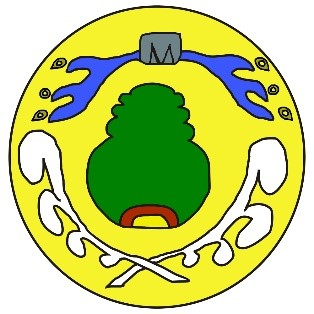
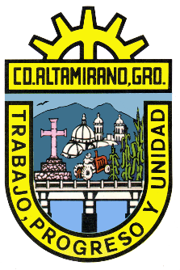

Toponimia, escudo y/o glifo. Según las relaciones geográficas de la diócesis de Michoacán,
la palabra Pungarabato deriva de los vocablos purépechas: pungare, que significa plumaje,
yhuato, que quiere decir cerro; en conjunto se traduce como “cerro de plumajes” o
“cerro de las plumas”.
GLIFO

El glifo se describe: “Sobre el círculo amarillo emergen las figuras de un cerro,
rodeado en la parte inferior hacia arriba, por dos plumajes blancos.
Y por la parte de arriba, descendiendo, dos corrientes de agua, una por cada lado del cerro”.
Otra descripción dice: “Dentro de un círculo amarillo, que representa el sol abrasador
de la Tierra Caliente, HURÍO, como llamaban a la región los antiguos purépechas,
sobresalen los símbolos siguientes: En el centro solar destaca la figura verde de un cerro,
que en este caso sería el Chuperio, con una franja roja de tierra en su parte baja,
que es el suelo de su asentamiento. En la parte superior del mismo se encuentra el símbolo
de una gran roca de donde brota, a cada lado, la corriente de los ríos que lo circundan,
luciendo, en la parte alta de las olas, granos de arena redonda y caracoles de agua que los
identifican.
En la parte inferior hay dos plumas de quetzal que se cruzan para ascender rodeando también
el cerro, simbolizando que era un santuario de aves policromas donde obtenían finos plumajes
los fundadores purépechas para la confección de mosaicos multicolores, ornato fundamental de
los Cúes dedicados a sus dioses”. Este glifo fue elaborado por el licenciado Félix Manuel
Villela Hernández en 1991.

El escudo de Ciudad Altamirano lo integran las figuras de la iglesia, el puente sobre el río Cutzamala,
el cerro de Chuperio, un tractor, una milpa y un zopilote, que simbolizan la unidad, el trabajo y el progreso.
Se describe así: “Conserva un formato tradicional en forma de ‘U’, rematada con un penacho en la parte superior.
“En su interior destaca la regia figura del cerro Chuperio, mudo testigo de tantos hechos que han transcurrido
a lo largo de toda la historia, desde la fundación del antiguo Pungarabato (la Conquista, la Independencia,
la Revolución, etc.), hasta nuestros días. En el cielo aparece la apacible silueta de un zopilote, ave de rapiña
común en esta región, que, lamentablemente, tiende a desaparecer–. En el centro sobresale la fisonomía de la catedral,
original monumento arquitectónico, construido en diferentes épocas, que engloba la ciudad, la familia, su personalidad,
la sociedad, la población y su idiosincrasia. En el costado izquierdo se ve la ‘Cruz de Mayo’, símbolo de la fe y la
leyenda, donde se dice que está hincado el ‘Báculo Sagrado’ del ‘Padre Santo’, Fray Juan Bautista Moya, fundador de
esta ciudad, como testimonio de paz y tranquilidad.
“En el flanco derecho se aprecia un sembradío de maíz, uno de los principales cultivos de este municipio, mismo que
representa el desarrollo del campo. El tractor, la expresión del avance tecnológico. Todo esto, moviéndose en torno
al único creador de sus costumbres y tradiciones, testigo de su presente y su pasado: el hombre. En la parte inferior
se ve la corriente del río Cutzamala, que baña la ribera norte de la ciudad, y mitiga el anhelo de esa zona, representando
magia, vida y canto, embellecido por el puente, lazo indispensable entre el comercio, el progreso y la comunicación.
“En la parte superior, en vez del tradicional penacho de plumas, queda plasmado el engrane, que constituye el trabajo,
la industria y la productividad. Como texto se lee, en primer término y en forma horizontal, el nombre de CIUDAD ALTAMIRANO,
GUERRERO, cabecera del municipio de Pungarabato y la ciudad de mayor importancia de esta vasta región de la Tierra Caliente,
de los estados de México, Michoacán y Guerrero. Siguiendo el contorno del escudo, y leyendo de izquierda a derecha y de arriba
hacia abajo, a manera de lema, se presentan las palabras: TRABAJO, PROGRESO Y UNIDAD, filosofía del altamiranense de
todos los tiempos. Respecto a los colores, el escudo está enmarcado con un color oro, por ser éste el elemento básico de una
de las más importantes industrias de Ciudad Altamirano, la orfebrería, famosa por sus maravillosas filigranas.
El conjunto cromático interno es afín a la naturaleza.
“Esta descripción podría resumirse de la siguiente manera: Se tiene en un solo emblema la representación gráfica del Pungarabato
antiguo y moderno, lo que hoy es Ciudad Altamirano, Guerrero. Su historia: el Cerro Chuperio; su leyenda: la Cruz de Mayo;
la industria: el engrane; el comercio y las comunicaciones: el puente; el campo: el maíz; la ciudad: la Catedral;
la vida: el río y el cielo; su mentalidad: el lema, y, lo más importante, el elemento humano: el campesino. Este emblema fue creado
por el licenciado Arturo Villela Hernández y aprobado en sesión de cabildo el día 3 de mayo de 1983, siendo presidente municipal el
señor Tirso Castillo Molina”.